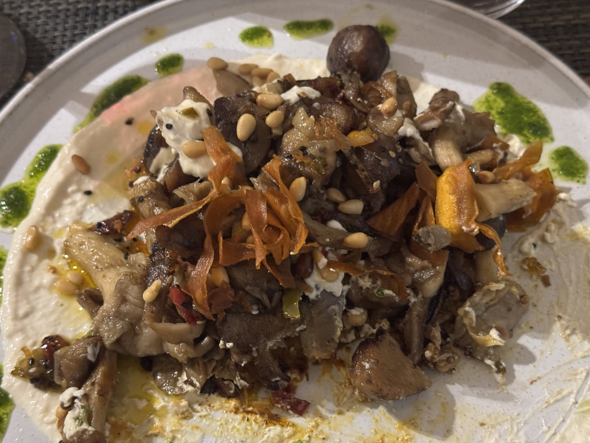

Setas salteadas sobre hummus con piñones
Ingredients
2×
- 300 g de setas variadas
- aceite de oliva
- 1 diente de ajo
- sal
- 1 zanahoria
- 2 cdas de piñones
- 200 g de hummus
- labneh
- aceite de perejil

Preparación
Paso 1
Saltear 300 g de setas variadas en aceite de oliva con 1 diente de ajo y sal hasta que estén doradas.
Paso 2
Freír 1 zanahoria cortada en tiras finas hasta que esté crujiente. Tostar 2 cdas de piñones.
Paso 3
Extender 200 g de hummus en un plato, colocar encima las setas, unos toques de labneh, los piñones y la zanahoria crujiente.
Paso 4
Terminar con unas gotas de aceite de perejil.